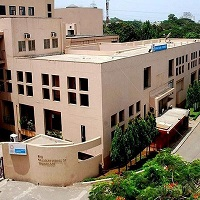
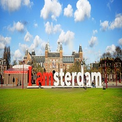

About
The Journey: Here's how it all began
-
2007-2009
St. Mary's High School, Navi Mumbai
Started my education from St. Mary's, this is where where I learnt to read, write and even code in C++. I had the unique opportunity to represent my school and my home state in various inter-school competitions, from these experiences i learnt valuable qualities being of a team-player and a leader. Graduated with Physics, Chemistry, Maths & Computer Science as majors.
-

2009-2013
S.I.E.S Graduate School of Technology, Mumbai
My passion for Computers led me to pursue my undergraduate studies in Computer Science at S.I.E.S GST, Mumbai, where I met many of my best friends, got opportunities to give back to the society and even managed to graduate with Flying colours.
-
2013-2016
TATA Consultancy Services, Mumbai
My quest to learn more about technology landed me at TATA Consultancy Services. This opened up new vistas, introducing me to new technologies like Java, Data Modeling, Data Warehousing and ETL Development
-

2016-2018
TATA Consultancy Services, Netherlands
The Amsterdam chapter, one of the most exciting yet the one where i learnt the most.
-

2018-2020
San Diego State University, San Diego
Carrying momentum forward, I joined San Diego State University, #goaztecs!!!, to realize my dream of pursuing Masters' in Computer Science and equip myself with refined skills in Software Development and Machine Learning.